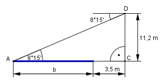

Aufgabe 92 Aus einer Höhe von 11,2 m erscheint das jenseitige Ufer eines Flusses unter einem Tiefenwinkel von 8°15'. Wie groß ist die Flussbreite b, wenn sich der Bebachter 5,5 m vom diesseitigen Ufer entfernt befindet?

15 15’ = ----° = 0,25° 60 Im Dreieck ACD: 11,2 m tan 8,25 ° = ------------ |*(b + 3,5 m) b + 3,5 m (b + 3,5 m) * tan 8,25° = 11,2 m b*tan 8,25° + 3,5*tan 8,25° = 11,2 |-3,5*tan 8,25° b*tan 8,25° = 11,2 – 3,5*tan 8,25° |:tan 8,25° 11,2 – 3,5*tan 8,25° 11,2 – 3,5*0,145 b = ---------------------- = ------------------ = tan 8,25° 0,145 = 73,7 m